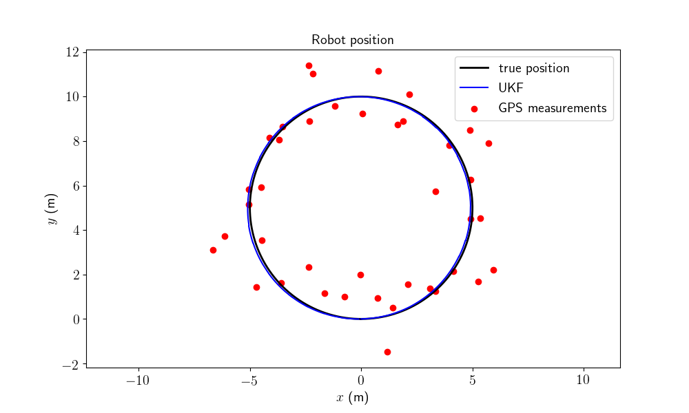
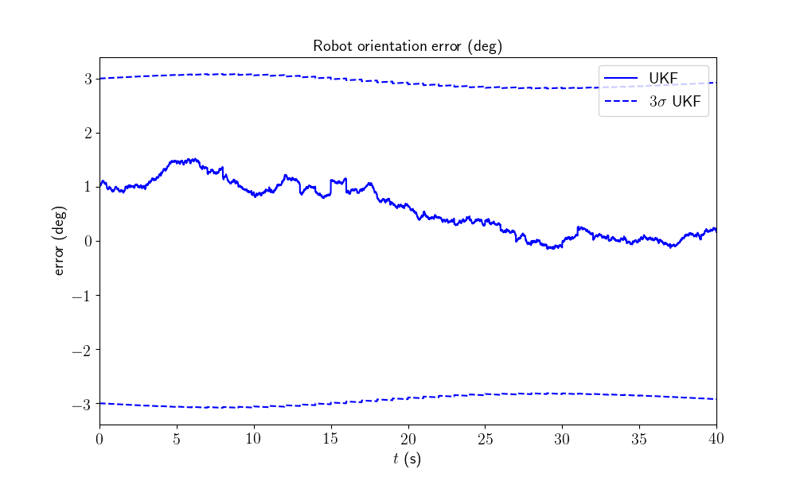
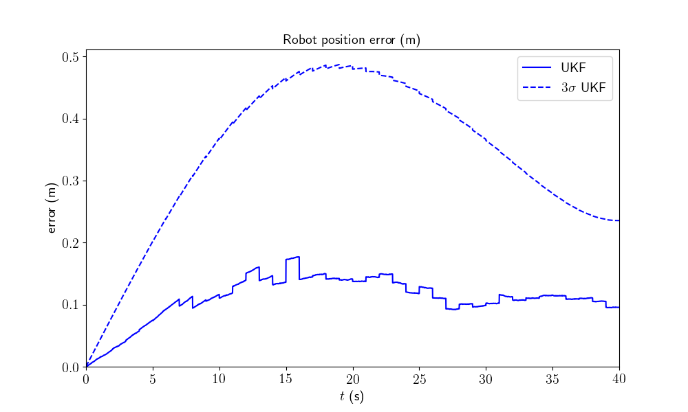

Note
Click here to download the full example code
2D Robot Localization - Tutorial¶
This tutorial introduces the main aspects of UKF-M.
Goals of this script:
understand the main principles of Unscented Kalman Filtering on Manifolds (UKF-M) which are described in [BBB19].
get familiar with the implementation.
design an UKF for a vanilla 2D robot localization problem.
We assume the reader to have sufficient prior knowledge with (unscented) Kalman filtering. However, we require really approximate prior knowledge and intuition about manifolds and tangent spaces.
This tutorial describes all one require to design an Unscented Kalman Filter (UKF) on a (parallelizable) manifold, and puts in evidence the versatility and simplicity of the method in term of implementation. Indeed, we only need to define an UKF on parallelizable manifolds:
a (physical) model of the state-space system that specifies the propagation and measurement functions of the system.
an uncertainty representation of the estimated state of the system, which is a mapping that generalizes the linear error definition \(\mathbf{e} = \mathbf{x} - \mathbf{\hat{x}}\) to any type non-linear uncertainty representation.
standard UKF parameters that are noise covariance matrices and sigma point parameters.
We introduce the UKF methodology by addressing the vanilla problem of robot localization, where the robot obtains velocity measurements, e.g., from wheel odometry, and position measurements, e.g., from GPS. The robot state consists of the robot orientation along with the 2D robot position. We reproduce the example that is described in [BB17], Section IV.
Import¶
Package import is minimal, as UKF-M is mainly build on the standard NumPy package.
import ukfm
import numpy as np
import matplotlib
ukfm.utils.set_matplotlib_config()
# The matplotlib configuration is only for better render the figures.
The Model¶
The first ingredient we need is a (physically based) model that defines:
the state of the system at instant \(n\), noted \(\boldsymbol{\chi}_n \in \mathcal{M}\), where \(\mathcal{M}\) is a parallelizable manifold (vectors spaces, Lie groups and others). Here the state corresponds to the robot orientation and the 2D robot position:
\[\mathcal{M} = \left\{ \begin{matrix} \mathbf{C} \in SO(2), \mathbf{p} \in \mathbb R^2 \end{matrix} \right\}.\]a propagation function that describes how the state of the system evolves along time
\[\boldsymbol{\chi}_n = f(\boldsymbol{\chi}_{n-1}, \boldsymbol{\omega}_{n}, \mathbf{w}_{n}) \in \mathcal{M},\]where \(\boldsymbol{\omega}_{n}\) is the input of the system and \(\mathbf{w}_{n} \sim \mathcal{N}(\mathbf{0}, \mathbf{Q}_n)\) a noise affecting the input and the model propagation.
an observation function that describes which measurements we dispose of in the form of
\[\mathbf{y}_n = h(\boldsymbol{\chi}_{n}) + \mathbf{v}_n \in \mathbb{R}^p,\]where \(\mathbf{v}_{n} \sim \mathcal{N}(\mathbf{0}, \mathbf{R}_n)\) is Gaussian noise.
The code contains several examples of models, which are declared as class. In
this script, we will use the LOCALIZATION model.
MODEL = ukfm.LOCALIZATION
Note
State and input are defined through classes. A state or an input is an
instance of the STATE and INPUT classes that are described in there
parent MODEL class. We prove it is useful as the state and the input have
often a complex form that is not handled in vector, .e.g. an orientation
matrix. In contrast we consider for conciseness that measurement at time
\(n\) is a vector (1D-array).
Simulating the Model¶
Along with the model, we compute simulated data, where the robot drives along a 10 m diameter circle for 40 seconds with high rate odometer measurements (100 Hz) and low rate position measurements (1 Hz). We first define the parameters, create an instance of the model, and compute the true state of robot during the sequence along with noisy inputs, where we have to define the trajectory radius and noise standard deviation.
# sequence time (s)
T = 40
# odometry frequency (Hz)
odo_freq = 100
# create the model
model = MODEL(T, odo_freq)
# odometry noise standard deviation
odo_std = np.array([0.01, # longitudinal speed (v/m)
0.01, # transverse shift speed (v/m)
1/180*np.pi]) # differential odometry (rad/s)
# radius of the circle trajectory (m)
radius = 5
# simulate trajectory
states, omegas = model.simu_f(odo_std, radius)
Note
The model encodes how noise affects the inputs and the propagation function, which can be non-linear. In contrast, we assume measurement noise affects the observations linearly. It is often the case in practice and sparse us some computation time, but the method can handle non-linear observation noises of the form \(\mathbf{y}_n = h(\boldsymbol{\chi}_{n}, \mathbf{v}_n)\).
The states and inputs variables are both list of STATE and INPUT
classes instances. One can access to the state at specific instant \(n\)
as
state_n = states[n] # model.STATE instance
omega_n = omegas[n] # model.INPUT instance
We can then access to the elements of the state or the input as
state_n.Rot # 2d orientation encoded in a rotation matrix
state_n.p # 2d position
omega_n.v # robot forward velocity
omega_n.gyro # robot angular velocity
The elements of the state and the input depend on the considered problem, they
are thus defined in the model class LOCALIZATION. You can directly look at
the LOCALIZATION() class to see how they are defined, that is also
described in [BB17]. The model documentation contains
also a mathematical description of the propagation and measumrent functions.
Note
The orientation of the robot, states[n].Rot, is defined via a rotation
matrix. Indeed, in all the examples, we define 2D and 3D orientations in
matrices living respectively in \(SO(2)\) and \(SO(3)\) and we
believe it is a well understandable orientation representation. The method
remains compatible both with angle or quaternion that can be advantageous
for numerical reasons (stability to round-off error, speed). We may drop
some numerical issues (round-off that leads to non-orthogonal rotation
matrices, non symmetric covariance matrices, speed improvement,
integration methods with Runge-Kutta scheme, …) in order to let the code
simple.
With the true state trajectory, we simulate noisy measurements of the robot position, where the odometry and GPS have different frequencies.
# GPS frequency (Hz)
gps_freq = 1
# GPS noise standard deviation (m)
gps_std = 1
# simulate measurements
ys, one_hot_ys = model.simu_h(states, gps_freq, gps_std)
The variable ys is a 2D array that contains all the observations of the
sequence. To get the k-th measurement, simply take the k-th element the
variable as
y_k = ys[k] # vector (1D array)
We also have defined an array one_hot_ys that contains 1 at instant where
a measurement happens and 0 otherwise (we indeed have a kind of multi-rate
Kalman filter).
We can visualize the robot trajectory along with measurements.
model.plot_traj(states, ys)
GPS measurements are visibly noisy.
Filter Design¶
Designing an UKF on parallelizable manifolds consists in:
defining a model of the propagation function and the measurement function.
choosing the retraction \(\varphi(.,.)\) and inverse retraction \(\varphi^{-1}(.,.)\) (we discuss about this below) such that
\[ \begin{align}\begin{aligned}\boldsymbol{\chi} &= \varphi(\hat{\boldsymbol{\chi}}, \boldsymbol{\xi}),\\\boldsymbol{\xi} &= \varphi^{-1}(\boldsymbol{\chi}, \hat{\boldsymbol{\chi}}),\end{aligned}\end{align} \]
where \(\boldsymbol{\chi}\) is the true state, \(\hat{\boldsymbol{\chi}}\) the estimated state, and \(\boldsymbol{\xi}\) the state uncertainty (we does not use notation \(\mathbf{x}\) and \(\mathbf{e}\) to emphasize the differences with the linear case).
setting UKF parameters such as sigma point dispersion and noise covariance values.
Step 1) is already done, as we just have to take the functions defined in the model.
Step 2) consists in choosing the functions that encodes our representation of the state uncertainty. A basic UKF is building on the error defined as \(\mathbf{e} = \mathbf{x} - \mathbf{\hat{x}}\), which is clearly not optimal for dealing, among other, with orientation. Rather than we generalize and define the uncertainty \(\boldsymbol{\xi}\) thought \(\boldsymbol{\chi} = \varphi(\hat{\boldsymbol{\chi}}, \boldsymbol{\xi})\), where the retraction function \(\varphi(.,.)\) has only to satisfy \(\varphi(\boldsymbol{\chi}, \mathbf{0}) = \boldsymbol{\chi}\) (without uncertainty, the estimated state equals the true state). The uncertainty \(\boldsymbol{\xi}\) lives in a vector space \(\mathbb{R}^d\) and one can use standard UKF tools on this variable. We then need a inverse retraction function to get a vector difference from two states, that must respect \(\varphi^{-1}(\boldsymbol{\chi}, \boldsymbol{\chi}) = \mathbf{0}\).
We choose here to embed the state in \(SO(2) \times \mathbb{R}^2\), such that:
the function \(\varphi(.,.)\) is the \(SO(2)\) exponential map for orientation and the standard vector addition for robot position.
the function \(\varphi^{-1}(.,.)\) is the \(SO(2)\) logarithm for orientation and the standard vector subtraction for position.
Note
We define the retraction and inverse retraction, which are chosen by the user, directly in the model class.
Note
One can suggest alternative and more adapted retraction, e.g. by viewing the state as a element of \(SE(2)\). It generally exists several possibilities to define retraction. When no theoretical suggestions are in favour of a retraction, we suggest to just compare then. In the benchmarks section, we compare different choices of retraction for different problems.
We define the UKF parameters based on the model parameters.
# propagation noise matrix
Q = np.diag(odo_std ** 2)
# measurement noise matrix
R = gps_std ** 2 * np.eye(2)
# sigma point parameters
alpha = np.array([1e-3, 1e-3, 1e-3])
# this parameter scales the sigma points. Current values are between 10^-3 and 1
Filter Initialization¶
We initialize the filter with the true state plus a small initial error heading of 1°, and set corresponding initial covariance matrices.
# "add" orientation error to the initial state
SO2 = ukfm.SO2
state0 = model.STATE(Rot=states[0].Rot.dot(SO2.exp(1/180*np.pi)),
p=states[0].p)
# initial state-error covariance matrix
P0 = np.zeros((3, 3))
# The state is not perfectly initialized
P0[0, 0] = (1/180*np.pi) ** 2
We then define the filter as an instance of the UKF class.
ukf = ukfm.UKF(state0=state0, # initial state
P0=P0, # initial covariance
f=model.f, # propagation model
h=model.h, # observation model
Q=Q, # process noise covariance
R=R, # observation noise covariance
phi=model.phi, # retraction
phi_inv=model.phi_inv, # inverse retraction
alpha=alpha # sigma point parameters
)
Before launching the filter, we set a list for recording estimates along the full trajectory and a 3D array to record covariance estimates.
ukf_states = [ukf.state]
ukf_Ps = np.zeros((model.N, 3, 3))
ukf_Ps[0] = ukf.P
Filtering¶
The UKF proceeds as a standard Kalman filter with a simple for loop.
# measurement iteration number (first measurement is for n == 0)
k = 1
for n in range(1, model.N):
# propagation
ukf.propagation(omegas[n-1], model.dt)
# update only if a measurement is received
if one_hot_ys[n] == 1:
ukf.update(ys[k])
k += 1
# save estimates
ukf_states.append(ukf.state)
ukf_Ps[n] = ukf.P
Results¶
We plot the trajectory, GPS measurements and estimated trajectory. As UKF estimates the covariance of the error, we have plotted the 95% confident interval (\(3\sigma\)). We expect the error keeps behind this interval. This plotted results has of course to be confirmed with average metrics to reveal the filter performances in term of accuracy, consistency and robustness.
model.plot_results(ukf_states, ukf_Ps, states, ys)
- 
- 
- 
All results seem coherent. This is expected as the initial heading error is very small.
Conclusion¶
This script introduces UKF-M and shows how the UKF on parallelizable manifolds generalizes the standard UKF by considering an user-chosen uncertainty representation. Two major advantages are that many problems could be addressed with the proposed framework, and that both the theory and the implementation are not so complicated. Once the physical model is established, deriving an UKF is quite immediate.
The filter works apparently well on a simple robot localization problem, with small initial heading error. Is it hold for more challenging initial error ?
You can now:
enter more in depth with the theory, see [BBB19].
address the UKF for the same problem with different noise parameters, and even tested its robustness e.g. to strong initial heading error.
modify the propagation model with a differential odometry model, where inputs are left and right wheel speed measurements.
apply the UKF for the same problem on real data.
benchmark the UKF with different function error and compare the new filters to both the extended Kalman filter and invariant extended Kalman filter of [BB17].
Total running time of the script: ( 0 minutes 3.172 seconds)